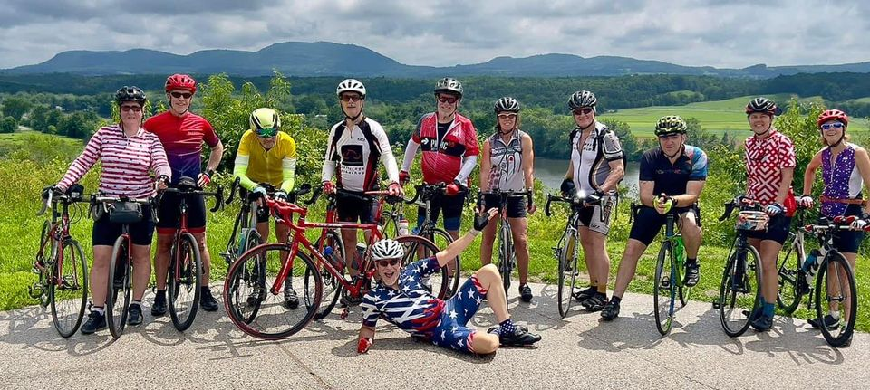

On this dashboard, we offer information for those who enjoy biking with others, whether for work or for fun! The map provides an overview of the number of people in each state who commute to work. While the numbers may seem small, everything is relative!
Everywhere!
It's not just fun to bike to work; it's also fun to bike with friends! We have information and resources about how to find bike clubs near your location. This link has a zip code locator where you can enter potential neighborhoods and know about the clubs in that area.
There are many advantages to group cycling. When you ride with others, you will ride stronger and longer! Bike clubs can also introduce you to new local routes and expand your knowledge of the sport. On top of that, a cycling club can double as a social network, providing an easy way to get—and stay—connected with the community.
